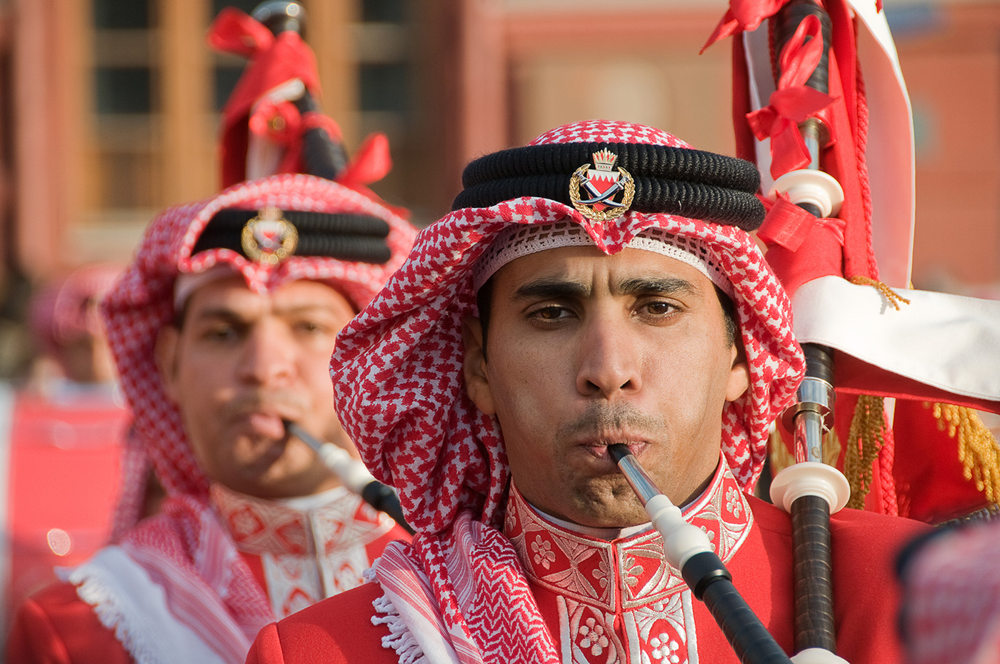
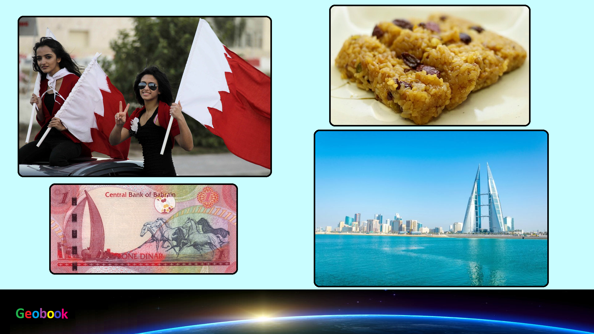

____
Люди
Численность населения - низкая,
Средняя продолжительность жизни — 71,3 лет у мужчин, 76,2 лет у женщин,
Языки — Арабский (официальный и самый распространённый),
Религия - Основная часть жителей Бахрейна — мусульмане (70,3 %). Большинство из них — шииты. Есть также христиане (14,5 %), индуисты (9,8 %), буддисты (2,5 %), иудеи (0,6 %), приверженцы традиционных верований (менее 0,1 %). Ни к какой религии не относят себя 1,9 % бахрейнцев, 0,2 % исповедуют прочие религии (2010).

История
На архипелаге Бахрейн в начале I-го тысячелетия н. э. появились арабы. В VII в. архипелаг Бахрейн стал составляющим Арабского Халифата, а в XIII веке получил независимость. После захвата Бахрейна Ираном арабский народ начал смешиваться с иранскими колонистами и возникла новая этническая общность-бахарна. Персы были изгнаны шейхами группы аназа в 1873 году. Аназа основала правящую династию Бахрейна.
____
